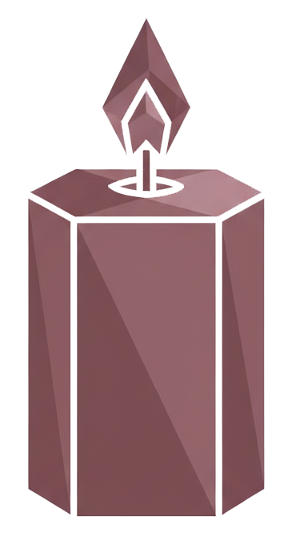
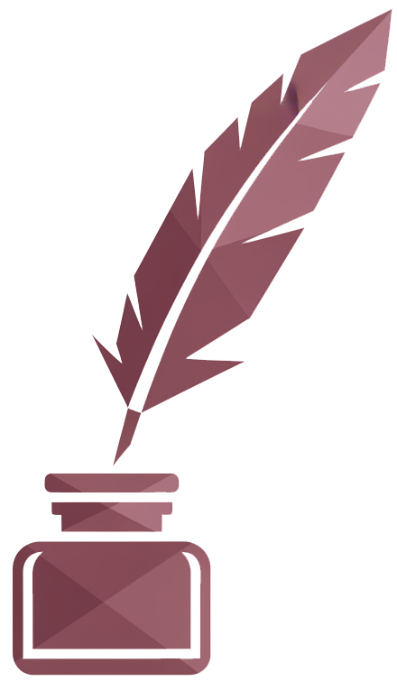
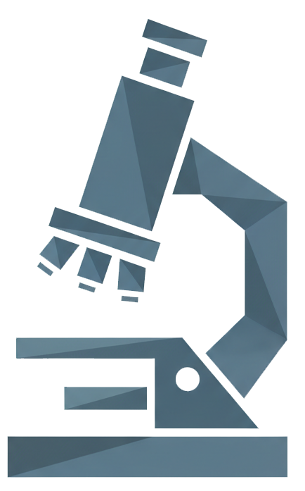
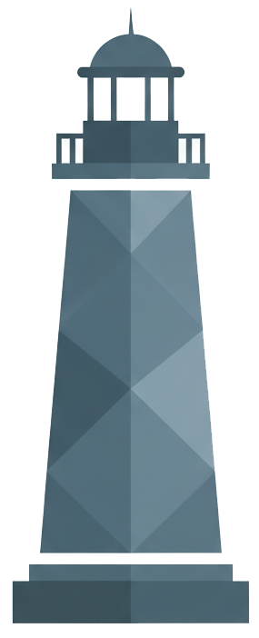
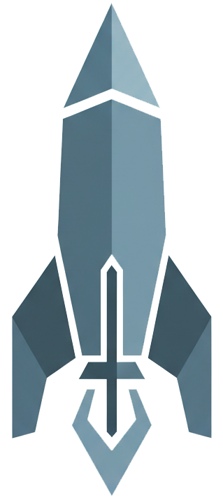
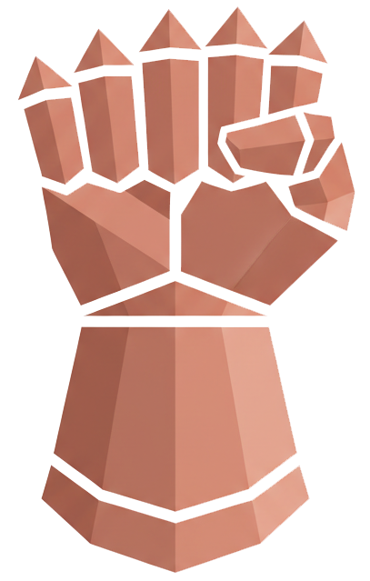
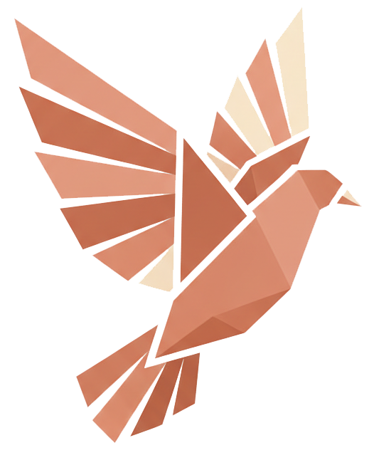

Enneagram Tipleri
Enneagram — 9 Kişilik Tipi
TİP 1
Mükemmeliyetçi
Ana Özellikler
İlişkide
İlişkide güvenilir, tutarlı ve dürüst bir partnerdir. Sözünü tutar ve sorumluluk alır. Ancak partnerin kusurlarını fark etme ve düzeltme eğilimi gösterebilir. Eleştirel iç sesi bazen partnere de yönelebilir. Karşılıklı kabul ve mükemmel olmanın şart olmadığını öğrenmek ilişkiyi güçlendirir.

TİP 2
Yardımsever
Ana Özellikler
İlişkide
İlişkide çok sevecen, ilgili ve destekleyici bir partnerdir. Partnerinin duygusal ihtiyaçlarını karşılamakta ustadır. Ancak kendi ihtiyaçlarını dile getirmekte zorlanabilir ve verdiği emeklerin karşılığını göremediğinde içten içe kırılabilir. Sağlıklı sınırlar kurmayı öğrenmek ilişkiyi dengeler.
TİP 3
Başaran
Ana Özellikler
İlişkide
İlişkide dinamik, motive edici ve çekici bir partnerdir. Partnerinin de başarılı olmasını destekler. Ancak duygusal derinliğe inmek yerine "her şey yolunda" imajını korumaya çalışabilir. Gerçek duygularını paylaşmak ve savunmasız olabilmek ilişki için dönüştürücüdür.

TİP 4
Bireyci
Ana Özellikler
İlişkide
İlişkide tutkulu, romantik ve derin bağ kuran bir partnerdir. Duygusal olarak şeffaf ve açık olmayı değerli bulur. Ancak idealleştirme ve ardından hayal kırıklığı döngüsüne girebilir. Partnerin "yeterince iyi olmadığı" hissi ilişkiyi zorlayabilir. Şimdiki anı kabullenmeyi öğrenmek dengeyi getirir.

TİP 5
Araştırmacı
Ana Özellikler
İlişkide
İlişkide sadık, güvenilir ve entelektüel olarak zengin bir partnerdir. Partnerinin bağımsızlığına saygı duyar. Ancak duygusal yakınlık ve paylaşımda zorlanabilir, geri çekilme eğilimi gösterebilir. Duygularını adlandırmayı ve paylaşmayı öğrenmek ilişkiyi derinleştirir.

TİP 6
Sadık
Ana Özellikler
İlişkide
İlişkide son derece sadık, koruyucu ve güvenilir bir partnerdir. Partnerinin yanında olma kararlılığı yüksektir. Ancak güvensizlik ve şüphe döngüsüne girebilir. Partnerin niyetlerini sürekli sorgulamak ilişkide gerilim yaratabilir. İç huzuru bulmak ve kendine güvenmeyi öğrenmek anahtardır.

TİP 7
Maceracı
Ana Özellikler
İlişkide
İlişkide eğlenceli, maceraperest ve ilham verici bir partnerdir. İlişkiye neşe ve heyecan katar. Ancak zorlayıcı duygusal konuşmalardan kaçınabilir ve sürekli yeni uyaranlara yönelme eğilimi gösterebilir. Acı veren duygularla yüzleşmeyi ve derinleşmeyi öğrenmek ilişkiyi olgunlaştırır.

TİP 8
Meydan Okuyan
Ana Özellikler
İlişkide
İlişkide koruyucu, tutkulu ve sadık bir partnerdir. Sevdiklerini savunmak için savaşır. Ancak kontrolcü davranabilir ve partnerinin bağımsızlığını kısıtlayabilir. Savunmasız olmayı ve yumuşaklığı korkaklık olarak görmemeyi öğrenmek ilişkiyi dönüştürür.

TİP 9
Uyumlu
Ana Özellikler
İlişkide
İlişkide sakin, kabul edici ve destekleyici bir partnerdir. Partneriyle uyum sağlamakta başarılıdır. Ancak kendi isteklerini ve ihtiyaçlarını bastırma eğilimi gösterebilir. Çatışmayı "ilişkiyi bitiren bir şey" olarak görmek yerine sağlıklı bir iletişim aracı olarak kullanmayı öğrenmek büyük bir dönüşüm sağlar.